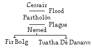
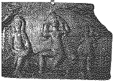
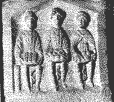
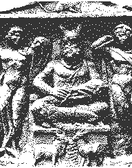
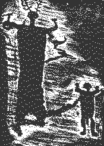
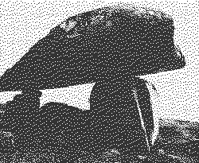

Any mythology is saturated with the values and beliefs of its culture. The myths not only reflect the precepts of the authors, they also shape the direction of the future for the culture's art and science. As the old Greek proverb says, "Mythos over logos."
By carefully analysing the mythologies, sometimes using literary and psychological techniques, we may be able to determine what the culture believed. The roles of the gods and goddesses, the way they interact and the nature of the stories all provide clues to the human society.
We can also sometimes detect the absorbtion of outside cultures and foreign elements by digging through the substratum of the myths. Cross-cultural comparisons can also be used to demonstrate that two cultures which have since diverged were once the same.
One can also appreciate mythology for its own sake, as a work of art echoing universal truths of the human predicament and as an aesthetic source of spiritual nourishment.
There are a number of factors which make Celtic mythology (and the myths of many cultures) difficult. These are considerations we should keep in mind as we study the myths and try to interpret their meanings.
Remember that there was no real unity among the Celts as a whole; they were a tribal society spread out all across Europe. Just as they had no centralised government, they had no standardised mythology. There are bound to be localised versions of myths, which evolved differently and were subjected to different influences.
The religious and scholarly elite may have viewed the myths than they were by the people at large. While scholars might have thought of deities as bringers of light and wisdom, popular conceptions of them may have simply been in terms of fertility and prosperity.
The myths survived for centuries via oral transmission through bards and poets specially trained to develop perfect memories. Still, it is certain that parts of the myths have been altered, and that the myths themselves have changed with time, especially because it was so long before they were written down.
Most of the Celtic myths were recorded by Christian scribes, who may have altered or removed parts of myths. Although the preservation of the tales was generally quite commendable, the scribes may have occasionally "corrected" myths to jibe with Christian "knowledge" or to prevent offending religious readers.
People sometimes translate myths liberally, or offer interpretations that advance their own theory or ideology. We are often at the mercy of the translator, who may take advantage of ambiguity to colour the story in an originally unintended shade.
Celtic mythology can be confusing for a student of Classical mythology. The Romans consciously categorised the characteristics and functions of their gods and goddesses, so that the role of a particular deity can be easily and non-ambiguously defined.
The Celtic pantheon, however, does not fit into this categorical model. Celtic deities typically have a number of functions, like fertility, battle and wisdom, which they may share with other deities. The Celtic gods can be quite ambiguous in their characteristics and roles; for example, a single god might be both a giver and taker of life. They are complex characters. Do not look for a single Mercury figure, or simple sun god. [13]
Unfortunately, we have very few written records of the Continental Celts save scattered engravings on shrines and weapons. We have no written accounts of their mythology. What little we do know about them comes from analysis of religious objects and some historical writings by the Greeks and Romans.
We do have several large bodies of mythologies from the Insular Celts, especially from the Irish and Welsh. These are old, traditional tales recorded at various times, usually by Christian monks. Careful study of the Irish and Welsh myths reveals many common elements and characters, which suggests that the Celts must have shared some common mythology at some time.
We also have a large number of more recent folk tales from all over the Celtic realms which resonate with old Celtic themes and ideas.
The Irish myths are a collection of cycles, each dealing with a different time period and central set ofcharacters. These cycles are:
There are a number of different versions of many of the myths, some of which are later accounts by Christian writers who attempted to synthesise the Celtic legends with Christian belief and their notion of "history."
This Cycle tells the ancient history of Ireland as a series of invasions. Five waves of invaders are said to have settled in Ireland before the ancestors of the Gaels, the Sons of Míl, arrived. It is the Tuatha Dé Danann who are the characters of supernatural might and magic in Irish myth.

Cessair is a figure from later Christianised mythologies. She was a daughter of Noah, and was the first woman to enter Ireland, along with fifty women and three men. It was she who introduced sheep to Ireland. All of her party are said (by some traditions) to have perished in the biblical Flood, but the consort of Cessair, Fintan, was transformed into a salmon, an eagle and a hawk, and appears later as the ultimate authority on ancient Irish tradition.
Partholón came from tir na n'og ("Land of Youth") in the West to Ireland so long ago that the country was geographically different: there were only three lakes, nine rivers and one plain. He came with his queen Dealgnaid and a number of men and women.
They battled a monstrous, violent race called the Fomoire, and eventually drove them out to the northern seas. Many generations later they were afflicted by a plague, and gathered on Senmag (The Old Plain), where they all perished.
The Nemedians sailed to Ireland in a fleet of thirty-two barks, thirty persons in a bark. They were lost at sea for a year and a half, and all but nine died: Nemed and four men and four women, who eventually landed in Ireland and grew to 8060 in number.
Nemed and his people battled the Fomoire as well, but after a plague that killed Nemed and 2000 of his people, the Fomorians ruled the island from their stronghold on Tory Island off the coast of Donegal.
After long oppression, the Nemedians finally confront the Fomoire, but only thirty Nemedians survive the onslaught, and leave Ireland in despair.
According to the most ancient myths, they then disappear utterly, but later Christian "historians" say that two descendants returned to Ireland as the Fir-Bolgs and the Tuatha Dé Danann.
The Fir Bolgs ("Men of the Bags") came first to Ireland. They came in three subgroups, the Fir Bolg, the Fir Domnan and the Galiolin. They are not important figures in Irish myth, and have a sense of servility and inferiority about them.
Five Fir Bolg chieftains are said to have divided Ireland between them, resulting in the five Irish provinces. The Fir Bolg reigned for thirty-seven years, until their battle with the Tuatha Dé Danann.
The Tuatha Dé Danann ("People of the goddess Dana") were a race who came to Ireland "out of heaven". Later stories embellished this, saying that they came from four cities in the northern islands, Falias, Gorias, Finias and Murias. They learned their wizardly arts from sages in these cities and brought a magical treasure from each.
From Falias they brought the Lia Fail, the Stone of Destiny, which roared when the rightful king stood on it. From Gorias came a spear which guaranteed its wielder victory. From Finias came a sword from which no one could escape, after being drawn from its scabbard. From Murias came the Cauldron of the Dagda, which could feed an army of men without being emptied.
They arrived in Ireland in a magical cloud, and offered to split Ireland with the Fir Bolg. The Fir Bolg were not impressed with the superiority of the Tuatha, however, and declined the offer. They fought a great battle, the First Battle of Mag Tuired, which saw the defeat of the Fir Bolg. The generous Tuatha, however, gave the Fir Bolg the province of Connacht, and kept the rest for themselves.
The Tuatha go on to have many conflicts with the Fomoire, and upon the arrival of the Sons of Míl, eventually enter the hills and mounds to become the sidhe-folk.
This Cycle tells the story of CuChulainn ("Hound of Culainn"), hero of the Red Branch. The Mythological Cycle's focus on superior knowledge and wizardry is contrasted by a focus on heroic valour in these tales, which hypothetically occur at about the same time as the birth of Christ.
Rivalries between the northern provinces of Ulster and Connacht provide the background for these stories, which abound in the challenges, taunts and boasts of the exploits of warriors.
He was born as Sétanta, son of Sualdam mac Roich, king of Cuailgne, and Dechtire, sister of Conchobar, high king of Ireland, and druidess daughter of Cathbad.
Sétanta was sent to the court of Conor to be raised. One day the court was to go to the home of a wealthy smith named Culainn to eat and stay the night. Sétanta was playing ball with his friends when the party left, and told them he'd catch up when his play was done.
The royal guests arrived at nightfall, and Culainn put out his enormous, ferocious hound to guard his land. In the middle of the feasting and merrymaking they heard a terrible baying and howling. When the visiting warriors went outside, they found that the young Sétanta had slain the beast, and bore him proudly in.
The host, however, was not so pleased. He mourned the death of his faithful hound, who had died for safety of his house, which he had done so well for so long.
But Sétanta generously pledged his servitude in righting his wrong: "Give me a child of that hound, O Culainn, and I will train him to be all to you that his father was. And until then, give me shield and spear and I will myself guard your house, better than any hound ever could". And from that day forward he was known as CuChulainn, the Hound of Culainn.
The central tale of the Cycle is the Táin Bó Cuailgne ("Cattle Raid of Cuailgne"), which tells of the alliance of four provinces, led by Queen Maeve of Connacht, to steal a great bull owned by an Ulster landowner.
This Cycle tells the story of Fionn and his band of heroic fighters, the fiana. These legends are markedly romantic and sentimental, in contrast to the harsh heroism of the Ulster tales.
Unlike the Ulster heros of the previous cycle, the fiana fight on foot (rather than in chariots), and display an intense zeal for camaraderie (unlike the solo heros such as CuChulainn).
These stories occur in approximately the third century CE.
There are no less than six differing lineages for Fionn, one of them tracing his descent from the god Nuada of the Silver Hand. All of them agree on his parents, however.
His father was Cumall, general of the fiana, and, according to some, king of Leister and head of the Clan Baoiscne. After refusing the High King to attend a meeting at Tara, leadership of the fiana was promised Goll MacMorna.
A conflict soon arose between Cumall and Goll. During the preparations for battle, Cumall met Muirne, daughter of the druid Tadg, who vowed that Cumall would die in this struggle.
On the eve of the battle Cumall sent Muirne a message: "When my son is born, flee away with him, and let him be brought up in the most secret places you can find. Conmean the druid has foretold his future, and under his rule shall the Fiana much exceed what it has enjoyed under mine."
The main theme of the story of Fionn is the blood feud between him and the Clan MacMorna, the ongoing struggle for vengeance that would eventually cause his own death.
Most of Welsh mythology is found in a collection called the Mabinogion (meaning possibly "tales of youth" or "tale of descendants", as mab [W] means "boy"), misnamed because of a misconception about it in the nineteenth century.
The tales were undoubtably passed on orally for many centuries before being recorded. The earliest known copy of these tales is the White Book of Rhydderch, dating to 1325, although written copies of it certainly existed beforehand. Unfortunately, many errors were introduced when successive copies of the tales were made, leaving strange enigmas for us to puzzle over. Still, these fantastic tales of marvels and magic are delightful reading, and clearly spring from ancient Celtic tradition, as murky as the water has grown. [23]
The main body of the text forms four well known branches, the tales of "Pwyll", "Branwen", "Manawydan" and "Math". Added to these are the shorter tales of "How Culhwch won Olwen", "The Dream of Maxen", "Lludd and Llevelus", "The Dream of Rhonabwy", "Owein", "Peredur" and "Gereint".
The Branch of Pwyll is made of three distinct subparts. The first two parts involve Pwyll's mending of mistakes, and the last revolves around the birth of Pryderi ("anxiety").
Pwyll's name means "sense", or "judgement", and he is the only character who figures in all four branches of the Mabinogion.
Rhiannon, the primary female in the story, is strongly linked to horses, and is a remembrance of the Celtic horse goddess Epona.
The themes of courtesy and restraint demonstrate influence of the chivalric code from the Continent entering Wales.
The first thread tells of Pwyll's year in Annwfn (the Welsh "Otherworld"). Pwyll was out hunting with his hounds one day when he came upon another pack bearing down on a stag. He thwarts the other pack, and has his pack take the stag instead.
He thereupon encounters a strange hunter, whose hounds he frustrated, who chastises Pwyll for his discourtesy and reveals himself to be Arawn, king of Annwfn. Pwyll obliges himself a year and a day in Annwfn to redeem himself, and Pwyll and Arawn change shapes.
During the year, Pwyll restrains himself from lying with Arawn's wife, and is able to overcome Hafgan, a challenger that rules another kingdom in Annwfn.
Hereafter Pwyll becomes known as Pwyll, Head of Annwfn.
The second thread tells of the appearance of Rhiannon. Pwyll sits on the gorsedd ("throne-mound") one day, knowing that he will either magically be wounded or else see a wonder.
He then sees a beauty maiden on a regal horse, and three times unsuccessfully sets his men to catch her. Finally, he rides after her and asks her to wait for him. She does, and identifies herself as Rhiannon, who has come to offer herself to be his bride.
At their marriage feast, a year later, Pwyll thoughtlessly promises a boon to a guest, Gwawl, who asks for Rhiannon. They insist upon a year's delay, and by a trick trap in a bag whereupon he is mercilessly kicked.
The third thread begins in the third year of the marriage. Subjects in the court chide Rhiannon's barrenness, but Pwyll's patience is rewarded a year later with the birth of a son.
The child is mysteriously stolen that night, however, and the nurses frame Rhiannon as murdering him. She is punished for this crime by carrying guests to court on her back.
A nearby Lord, who mysteriously loses his best colts every May Eve, at last keeps watch and hacks the giant claw that seizes the new colt through the window. When he rushes outside to face the monster, he finds the baby boy, who he raises until he realises it is Pryderi, son of Pwyll and Rhiannon.
The Branch of Branwen takes place in northern Wales and Ireland, and is made of two overlapping parts. In the first section, the British insult the Irish, who initially accept the British reparation, and then reject it. In the second section, the British initially accept compensation and then reject it.
The main characters of 'Branwen' are the children of Llyr, brothers Bran and Manawydan and sister Branwen. They have two half-brothers, Efnisien (who stirs up trouble) and Nisien (who makes peace).
Significant motifs in this story, the theft of the cauldron, the fisher king, and the destruction of lands, are to prominently appear in later Arthurian legends.
Matholwch, king of Ireland, went to Harlech to seek Branwen's hand in marriage. Her brother Efnissien is offended that he wasn't consulted in the matter, and mutilates Matholwch's horses at the wedding feast.
The British apologise for Efnissien's discourtesy, and offer as partial compensation, magic cauldron taken from a lake in Ireland, which rejuvenates dead warriors (but leaves them speechless).
Branwen is honoured for a year and bears a son, Gwern, but Matholwch is soon forced by subjects to punish her for her brother's maliciousness. She is forced into menial labour for three years, during which time she raises a bird and teaches it to speak to her brothers of her condition.
Her brother Bran, of gigantic proportions, strides across the Irish channel and lies down to form a bridge, over which his hosts cross. Matholwch submits, and Branwen urges Bran to accept his submission, 'lest the country be spoiled.' Efnissien again takes offence, however, and casts Gwern into a fire.
The hosts battle, and Bran is mortally wounded, but Efnissien sacrifices himself so that the magic cauldron might be destroyed, which is giving the Irish a significant advantage. Of all the peoples of Ireland, only five pregnant women survive the battle to repopulate the land. Only seven warriors among the British hosts survive the battle, and bring the head of Bran back with them to Britain.
When they reach British soil, Branwen laments the desolation of the two countries, and dies of a broken heart.
They soon hear news that the seven lords in charge of the stewardship of Britain have been overrun by Caswallan, who wears a magic mantle of invisibility.
The seven survivors spend seven years of feasting at Harlech, with the three birds of Rhiannon singing for their pleasure, and eighty years in a royal hall in Gwales, where they live oblivious of grief and the passage of time. One day, however, a forbidden door is opened, and they continue their trek.
They go to London and bury the head of Bran, where it looks out in protection of Britain in assurance that no invaders shall overrun it.
The Branch of Manawydan takes place in southern Wales and in England, and begins after Pryderi is married and succeeds his father Pwyll as Lord of Dyfed.
This story shows the influence of chivalric ideals, with the emphasis of graciousness and virtue, even more so than 'Pwyll.
Upon the death of his father, Pryderi gives his mother, Rhiannon, to Manawydan. Pryderi, Manawydan and their wives go to feast at Arberth. After some feasting, they sit upon the gorsedd, and a great clap of thunder roars through the sky and a mist falls. After it fades, they can see no sign of human life - everything and everyone has vanished.
After two years in the deserted country, they go to England, where they work from town to town as saddlers, shieldmakers and shoemakers, kept adrift by the pranks of malicious rivals.
They later return to Arberth, and the two men go hunting. In spite of Manawydan's warning, Pryderi is lead into a magic fortress whose floor contains a well with a golden bowl hanging above a marble slab. He grabs the bowl, but is unable to remove his hands from it, or remove his feet from the floor, and is stricken dumb.
Rhiannon chides Manawydan for letting Pryderi go, and goes in search of her son, but she repeats Pryderi's mistakes, and the fortress vanishes.
When Manawydan tries his hand again at shoemaking, he is again thwarted by villains and returns to Arberth. He sows corn, but after two of his three parcels have been stripped, he sets watch and sees a host of mice carrying away corn from his last share.
He catches the only slow mouse and returns to the gorsedd, preparing to hang the mouse as a thief, but three priests in succession appear to barter for its freedom.
The third priest is a bishop, who reveals that the thief is his own wife, and that she is pregnant. He is Llwyd, captor of Pryderi and Rhiannon, wizard who has made the country deserted, and friend and avenger of Gwawl, who wanted Rhiannon for bride when Pwyll took her.
To win back his wife, Llwyd frees Pryderi and Rhiannon, breaks the spell over Dyfed and promises that no spell shall again be cast upon the land.
The Branch of Math occurs in north Wales, and focuses on the family of Don for its main characters.
The tale is comprised of three sections. The first is a complex interweaving of a raid on the Otherworld, the forbidden lover, and the regeneration of the old into the young.
The second tells of the rape of Goewin and the birth of Aranrhod's two fatherless sons (a confusion, perhaps, due to these characters originally being the same).
The third revolves around Blodeuedd (from blodeu, "flowers") and her relationships with Lleu and Goronwy, in a Samson and Delilah style story of treachery.
We begin the story recounting the plight of Math. who can only live if his feet are in the lap of a maiden, unless war should make this infeasible. Math loses one such maiden to the treachery of Gwydyon and Gilfaethwy in a deception that causes the death of Pryderi.
Ironically, Gwydyon remains the kingly counsellor and adversarial schemer in each twist of the tale, advising Math on the acquisition of a new footholder. Gwydyon calls his sister, Aranrhod, whose virginity he proves by her stepping over his magic wand. Aranrhod drops a boy-child, and drops something else as she heads for the door, which Gwydyon hides in the chest. Gwydyon finds another child, and the first child is baptised and named Dylan ("Sea Son of Wave").
Gwydyon takes the other boy to Aranrhod's fortress, but she is so offended by his pursuit of her shame that she curses her son's destiny, that he should not have a name unless she give it to him. Gwydyon and the boy appear in court disguised as shoemakers, and Aranrhod comments on the sure hand of the fair one, which becomes the boy's name, Lleu Llaw Gyffes.
In anger she curses him again, that he should not bear arms until she equip him herself. Gwydyon, using spells of illusion, causes her to equip the boy.
She curses him a third time, that he should not have a wife of 'the race that is now on this earth'. Math and Gwydyon, however, conjure a woman from the flowers of the oak, the broom and the meadowsweet, and name her Blodeuedd, and give her to Lleu as bride.
But Blodeuedd falls in love with Goronwy, Lord of Penllyn, and schemes the murder of Lleu with Goronwy. Pretending to take cautions for his safety, Blodeuedd learns from Lleu how he might be killed: he cannot be slain within a house, or outside, on horseback or afoot, and the fatal spear would have to be prepared during a year of Sunday Masses.
The lovers trick Lleu into a tub under a thatched frame on the bank of a river, where he stands with one foot on the back of a he-goat and the other in the tub. When hit by Gronowy's spear, he flies away in eagle form. Gwydyon searches long for him, finding him in an oak-tree on a high land plain, where his decaying flesh falls to the ground. Gwydyon restores him to human form, and all of the best healers are called to restore him.
Goronwy is killed by Lleu the same way that he had intended to kill Lleu, and Lleu is said to become Lord of Gwynedd.
Celtic myths typically revolve around a royal family of god-like stature. We have, for example, the Tuatha Dé Danann in Irish myth and the family of Don in the Welsh Mabinogion. There are a number of strong parallels between the members of these two families.
"Tuatha Dé Danann" means literally "people of the goddess Dana", a matrilineal name for the Irish divinities. Dana (another manifestation of Bridget) corresponds to the Welsh matriarch Don, whose name may be a form of Donwy, which is to be found in the names of the rivers Dyfrodonwy and perhaps Trydonwy. This is significant because of the common Celtic association between goddesses and rivers, and because of the similarity to the Vedic goddess Danu from the Rig Veda, whose name means "stream" and "waters of heaven". [37]
This same root can be found in the names of rivers such as the Russian Don, Dnieper, and Dniester, the Danube, and several English rivers such as the Don.
The Welsh character Lludd corresponds to the Irish character Nuada, traceable through a complex linguistic chain of evolution. Most telling, however, is Lludd's common epithet Llaw Ereint ("Silver Handed"), which links him clearly with the Irish Nuada, whose hand was sliced off in battle and replaced by a silver prosthesis.
The Welsh character Lleu Llaw Gyffes ("Lion of the Sure Hand") is the equivalent to the Irish Lugh Lamfada ("Lugh of the Long Arm"). Both are central heroic warriors with aspects of solar deities.
The Welsh character Manawydan son of Llyr corresponds to the Irish character Manannán mac Lir, both of which are sons of the god of the sea. The Isle of Man took its name from this Celtic god.
The names of the Welsh character Gofannon and the Irish character Goibniu mean "smith", and they have similar parts to play in tales of murder.
In the Mythological Cycle, the CuChulainn Cycle and the Fionn Cycle the heros must defeat opponents with one eye and a character of destructiveness and malice. The forces of evil generally appear as grotesque figures, distorted and disproportionate in size (usually larger than normal, but sometimes smaller than normal). [37]
These antagonists are most clearly illustrated in the Irish myths as the Fomoire, whose name is derived from two Irish words meaning "under the sea". They have characteristics which link them in the Celtic mind to the sea: vastness, darkness and mystery. In some respects they seem to reflect feminine principles, and may reflect more ancient practices of water and moon worship. [48,37]
They also appear in Welsh tales as the Coraniaid, from the Welsh corr, "dwarf". In the tale "Lludd and Llefelys", the Coraniaid are responsible for the first plague of Britain, and are said to be great wizards who are able to hear anything spoken on the Isle of Britain that is picked up by the wind. [2]
The family of the sea god Llyr [W] also play an adversarial role in the Welsh myths, despite the fact that this does not happen with the sea god Lir [I] in the Irish myths. Llyr's family's role is similar in the way that the families become linked through marriage, however, as the Fomoire king Elatha married Eriu of the Tuatha Dé Danann.
The Celtic mind perceives a definite link between the sea and powerful, mysterious forces which could be conceived of doing great evil. This notion is particularly relevant in connection with the folk-tales of the Goborchinns (Horse-heads), the Welsh afanc, the Highland water-horse, and the Lowlands kelpie. These tales link horse-monsters, which often appear in semi-human form, with the ocean. A number of Welsh and Irish figures seem to fit these associations as well. [39] This is particularly interesting because the association between horses and the sea is an early Indo-European one, and can be seen in the Greek Neptune and Roman Poseidon.
Unfortunately, later Christianising influences in Ireland begin to blur the distinction between the Fomoire and the Tuatha until both diminish in size and disappear into the mist as the Sídhe-folk.
Triplism is a common trait of Celtic deities, as it is for the deities of many peoples of the world. The concept is not as much the union of three separate divinities, but more the expression of the power of a single deity, and perhaps the functions of the being's manifestations. Triplism is to be found among both male and female deities, but it is more pronounced in Celtic goddesses.
An example is that of the sisters Eriu, Banba and Fodla, of the Tuatha Dé Danann. Eriu, for whom Ireland (called by the Irish "Eire") is named, represents the earthy, or geographical, aspect of Ireland. Banba represents Ireland's warrior aspect, Fódla represents Ireland's intellectual or spiritual aspect.
Another example is that of the Mórrígna, the three sisters Mórrigan ("Great Queen"), Nemain ("Panic") and Badb ("Carrion Crow"), who often appear as ravens, crows or hags at battle. As war furies, they compel men to battle and exult in the bloodshed of war. They sometimes also appear as maiden, wife and crone, symbolising functions of both sexuality and death.
Many goddesses have direct ties to the land. Ireland is named after the goddess Eriu, and a large number of locations and natural features in the Celtic world are named after Celtic goddesses.
Another manifestation of this concept is the ritual wedding between the king and the goddess of the land over which he is to rule. There is ample evidence that the ancient practice of royal inauguration included a symbolic wedding of the king to a woman who symbolised the land of his kingdom. [26]
The fiery Queen Maeve [I] of the CuChulainn cycle may be in part such a symbol of the land. Men become kings by marrying her, but she maintains her property, sovereignty and sexual independence, "each man in another man's shadow."
In some tales the Goddess of Sovereignty is disguised as an old hag, such as in the tale of Níall [I] of the Nine Hostages. Unaware that this is a test, he, and not any of his brothers, is willing to kiss the old hag that guards the well (and in some texts, lies with her). She turns into a lovely maiden, who reveals her identity and names Níall and his heirs as the future kings of Tara.

Springs and rivers are also deeply connected with Celtic goddesses. Most all of the rivers in Scotland, Ireland and Wales have been named after female deities. Even the "Father Thames" can be traced back to the feminine name Tamesa. [39]
This is probably an older Indo-European tradition, as river names such as the Danube and Dnieper attest to their origins as Indo-European goddesses. [37]
This tradition is not surprising, for today we call water the "source of life," just as the womb is the source of human life.

Many springs and rivers in Celtic lands have goddess shrines. The triple Matres or Matronas ("Mother Goddesses") were common icons on such shrines in Britain, Gaul and the Rhineland during Roman rule. Clearly linked with fertility, they carry fruit, baskets, grapes or other food and often have babies at their breasts. They are sometimes next to the prow of a ship, emphasising their association with water. [17]
Queen Maeve [I] had to bathe in a spring at Inis Clothrand every morning, possibly to renew her youth. Another connection between Maeve and water is that a tree by a holy well is known as a Bile Medb [I]. [48]

The Horned God is possibly one of the oldest and most potent archetypes in the Celtic pantheon. The auspicious figure is found on the Gundestrup Cauldron, holding a snake and surrounded by all manner of beasts. A number of Romano-Celtic sculptures depict him also, and one such monument bears the name "*ernunnos" (the '*' indicates a missing letter). This certainly identifies Cernunnos ("Horned One").
The representations of Cernunnos bear three salient features. The first is his kinship with the stag, whose antlers he wears and who sometimes appears near by. The second is the frequent association with the ram-horned snake, who merges with the god in a monument at Cirencester. The third is the symbolism of prosperity and wealth, accompanied by beasts, fruit, corn and even money. [17]

A character in the Welsh tale "Owein", the one-eyed black giant, is almost certainly Cernunnos. He is described as "keeper of the forest," and displays his authority by striking a stag with his club, whose roar of pain summons all of the other animals, so many that there was barely room for anyone to stand. When commanded by the giant, the animals lowered their heads and worship as 'obedient men do their lord'. [43]
Some believe that Conall Cernach of the Irish epics may be the Irish remembrance of Cernunnos. Besides the cern element in his name, an episode in the Tain Bo Froech ("Cattle-raid of Froech") shows him overcoming a monstrous snake. [43]
Herne the Hunter, who is said to haunt Windsor Great Park, and who appears in Shakespeare's Merry Wives of Windsor is almost certainly a Cernunnos figure. [43]
An annual fall festival in Brittany commemorates St. Cornely, patron saint of horned animals. Another festival at the same time in Staffordshire includes a ritual dance in which males dance wearing antlers, one of which has been carbon-dated to pre-Norman times. [43]
It has been noted that the medieval witch-cult in Scotland was a survival of the worship of the Horned God, quickly denounced by the Christian Church as Satanism. One of its beliefs was that the god, bestower of fertility and plenty, was incarnate in a person or animal, around whom rituals were performed. His name, Auld Nick, Auld Clootie or Auld Hornie, points to his Cernunnos nature, and his original identity with the Greek God Pan and other similar deities. [28]

The Celtic notion of the Otherworld has several intermingled traditions: an association with islands in the West, a submarine land, and a parallel world entered through caves, hills or sídhe (or barrow mounds). Some claim that in Irish tradition it is the oceanic Otherworld which seems to be the older, and the later Christianising influences which have scared the old gods into retreating into the subterranean sidhe. [48]
As an island, it is known as Tir-nan-Og [I] ("Isle of Youth"), Emain Ablach [I] ("Eiman of the Apples") and Avalon [W] ("Land of Apples"). Emain Ablach is another name for the island Arran, which, according to St. Kilda, the Celts imagined "to be the gateway to their earthly paradise, the Land-Under-Waves, over the brink of the Western Sea." Sidhe women might sail in magic boats to take away a mortal with whom they have fallen in love, or to rescue a dying hero, such as happens to King Arthur. [28]
The Irish tales known as Imrama were wonder stories of overseas expeditions to the Otherworld. Although the imrama show definite Christian influence, the tale "The Voyage of Bran" is considerably old tale whose pagan roots are clear in its depiction of the Island of Joy, where everyone laughs without cause, and the Island of Women, on which they are entertained by beautiful women. When they return after what they think has been weeks, they find that centuries have passed. [13]
The Welsh Annwn, "nether-world", seems to be an Otherworldly realm. A poem called "The Spoils of Annwn" refers to King Arthur's travel to Annwn, in which many of his men were lost. Allusions to his ship Prydwen would imply an overseas location, and suggestive place names such as Caer Siddi (probably a borrowing from the Irish sid), Caer Feddwid ("Court of Intoxication") and Caer Wydyr ("Court of Glass") point to their Otherworldly nature. Glass is characteristic of the Otherworldly buildings, perhaps again suggestive of the watery nature of Annwn. Also of note is the cauldron Arthur brought back with him, which was warmed by the breath of nine maidens. [13]
In the tale "Pwyll Prince of Dyfed," Pwyll decides to sit atop a gorsedd (barrow mound), where he will either be magically wounded or else see a marvel. Pwyll sees a beautiful woman on a horse, but when he commands his men to talk to her, they cannot catch up to her and her swift steed. The birds of this goddess, Rhiannon, are said to bring the listener to the bliss of the Otherworld with their sweet singing.
The hero entering the Otherworld before his death was given a silver branch of the apple tree, laden with blossom or fruit, or sometimes a single apple, usually given by the fairy woman who desired the mortal's company. [28]
This token was given to Bran in "The Voyage of Bran" by a fairy woman who sings to him of a Westerly island. The next day he starts his sea voyage towards the setting sun. In the Irish tale "Cormac's Adventure in the Land of Promise," appears a magic silver branch laden with three golden apples. "Delight and amusement to the full was it to listen to the music of that branch…"
The Otherworldly tree and the sacredness of the tree may point towards older traditions of a central world tree and its role in the creation of the world, such as is found in the Norse Yggdrasil. Five sacred trees mentioned in the Rennes Dindsenchas [I], long since fallen, are said to have been grown from a branch bearing nuts, apples and acorns, brought by an Otherworldly visitor. The trees represent the four quarters of Ireland, and the center of the Ireland at Uisnech, and bore witness to the history of the island. [13]
The spring in the Otherworld, the Well of Connla, the source of the rivers of Ireland, was associated with trees that dropped hazel nuts into the water, where they were eaten by salmon who swam down the rivers and eaten by seers who gained knowledge from them. [13]
The province of Munster in Ireland and the county of Dyfed in Wales, both south-western areas, have associations with the Otherworld, either near by or inside their realms. [37]
Regardless of its location, the Celts viewed the Otherworld as a world of youth, pleasure, eternal spring and boundless joy. Not only does its sense of space and location seem to differ from our own, but its sense of time is also unsynchronised, passing in days what may be years or minutes in the mundane world.
The confusion of geographical location may be due to different traditions, or perhaps to the notion that the Otherworld permeates and transcends our own. Indeed, it may only be music or a spell that is required to bring the hero or heroine into the unseen realm. Although its realm lay at our feet, only those with Second Sight may be able to gain glimpses of the invisible Otherworld around us.
The tales of King Arthur and his Knights of the Round Table, although fully developed and elaborated by French and Norman storytellers, can be seen as embellishments of elements of the Celtic mythos. Knights and other characters such as Peredur, Gawain, Pelleas and Brandel can be seen to be thinly disguised characters from Welsh myths such as those in the Mabinogion. [49]
The Blessed Isle of Avalon ("Land of Apples") is very clearly an Arthurian portrayal of the Celtic Otherworld, by its name and by its role as Arthur's final destination.
Many aspects of the Holy Grail can be seen in the magic cauldrons of both Irish and Welsh myth. They are magically capable of bringing men back to life, and are an inexhaustible source of food and nourishment.
Even Arthur's sword, Excalibur, is a Latinised version of Caliburn, derived from the Welsh Caladfwlch. It is also portrayed in the Irish myths as Fergus's magical sword Caladcholg ("hard dinter")